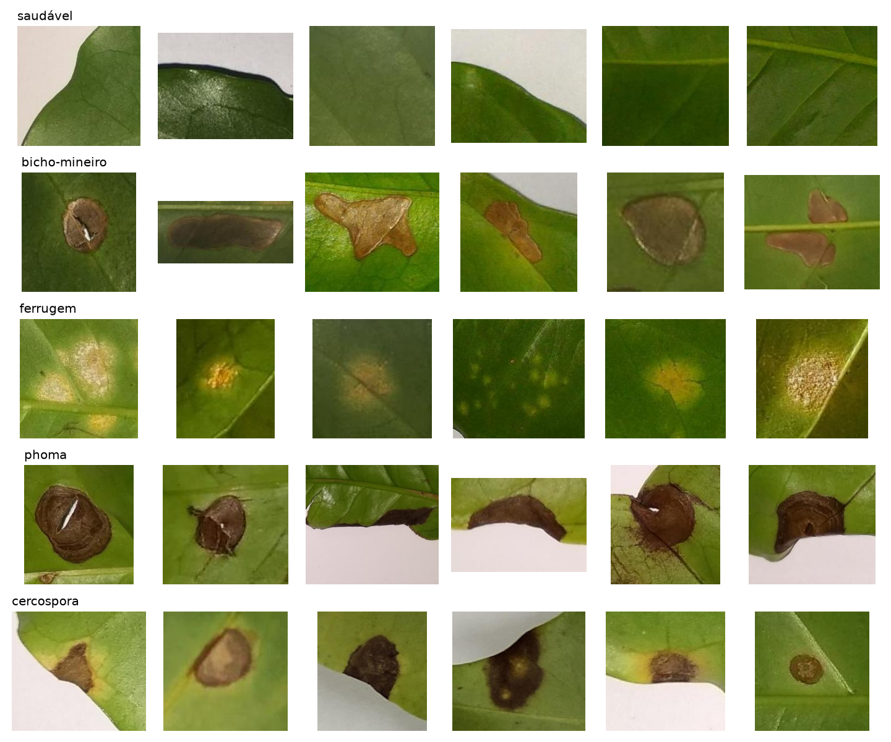
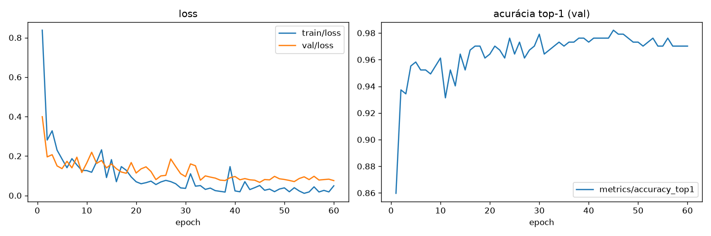
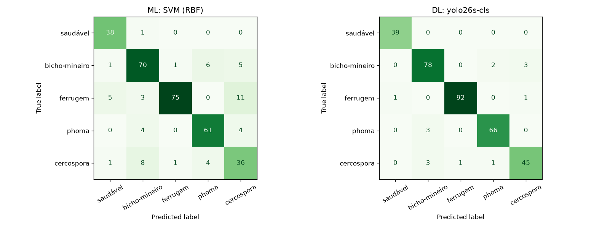
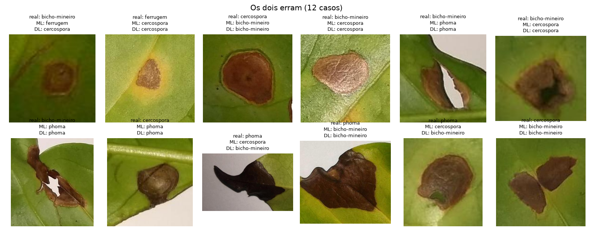

Classificação de estresses bióticos em folhas de café arábica: Machine Learning clássico versus YOLO
Integrantes: Kaíque Medeiros Lima e Erick Bonruque
Dataset: BRACOL (subconjunto symptom) · Data: 11 de novembro de 2026
1. Descrição do problema
O Brasil é o maior produtor mundial de café, e a produtividade das lavouras depende do controle de pragas e doenças que atacam as folhas. Quatro estresses bióticos são comuns no café arábica: o bicho-mineiro (Leucoptera coffeella), a ferrugem (Hemileia vastatrix), a mancha-de-phoma (Phoma spp.) e a cercosporiose (Cercospora coffeicola). O diagnóstico é feito por inspeção visual, que exige experiência e é difícil de escalar. Várias lesões são parecidas: manchas marrons necróticas aparecem no bicho-mineiro, na phoma e na cercosporiose.
O projeto trata o diagnóstico como um problema de classificação de imagens em 5 classes (saudável e os quatro estresses), a partir de recortes de sintomas fotografados com smartphone. A mesma tarefa e o mesmo dataset são resolvidos por duas abordagens: uma baseada em atributos extraídos manualmente e classificadores clássicos, outra baseada em uma rede neural profunda da família YOLO.
2. Objetivos
Objetivo geral: comparar, de forma objetiva e reprodutível, uma solução de Machine Learning clássico e uma solução de Deep Learning para identificar estresses bióticos em folhas de café.
Objetivos específicos:
Construir um pipeline clássico com pré-processamento, extração de atributos de cor, textura (LBP, Haralick) e forma (HOG) e classificadores supervisionados, com meta de F1 ≥ 0,60.
Treinar um classificador YOLO com transferência de aprendizado, com meta de F1 ≥ 0,80.
Medir qual grupo de atributos contribui mais para o desempenho do pipeline clássico (ablação).
Comparar as soluções por precision, recall, F1, matriz de confusão e análise visual de acertos e falhas.
3. Dataset e origem
O BRACOL (Brazilian Arabica Coffee Leaf images dataset) foi publicado por Krohling, Esgario e Ventura (UFES) em 2019, sob licença CC BY 4.0. As folhas foram coletadas em Santa Maria de Marechal Floreano, região serrana do Espírito Santo, em diferentes épocas do ano. As fotos mostram a face inferior (abaxial) da folha sobre fundo branco e foram tiradas com cinco smartphones diferentes. A rotulagem foi assistida por um especialista.
O dataset tem três partes: 1.747 folhas inteiras com rótulo de estresse predominante e severidade, 500 imagens com máscaras de segmentação (fundo, folha, sintoma) e o subconjunto symptom, com recortes de lesões isoladas em que cada imagem contém um único estresse. Este projeto usa o subconjunto symptom, que já vem com divisão oficial em treino, validação e teste.
Classe
Treino
Validação
Teste
Total
Saudável
182
40
39
261
Bicho-mineiro
374
83
83
540
Ferrugem
434
93
94
621
Phoma
325
70
69
464
Cercospora
224
49
50
323
Total
1.539
335
335
2.209
Tabela 1. Distribuição do subconjunto symptom. Imagens JPEG com mediana de 227 × 204 px. A maior razão entre classes é de cerca de 2,4:1 (ferrugem contra saudável).

Figura 1. Exemplos do conjunto de treino, uma classe por linha.
O arquivo publicado no Mendeley Data (doi 10.17632/yy2k5y8mxg.1) está truncado: tem só 1.402 imagens de folhas, sem os recortes de sintomas. A versão completa (4.990 arquivos) foi obtida pelo link indicado no repositório oficial dos autores (github.com/esgario/lara2018).
4. Metodologia
Protocolo: o treino ajusta os modelos, a validação escolhe atributos, hiperparâmetros e o checkpoint da rede, e o teste é usado uma única vez, no fim. As duas soluções usam exatamente as mesmas imagens em cada partição.
Métrica principal: F1 macro, que dá o mesmo peso a cada classe e não é inflada pelas classes maiores.
Reprodutibilidade: semente fixa (42), treino determinístico, tudo em um único notebook (bracol_ml_vs_dl.ipynb) executado do início ao fim.
Pré-processamento: cada imagem é redimensionada para 128 × 128 px (interpolação por área) e convertida para HSV, Lab e tons de cinza.
Atributos, organizados em grupos para permitir a ablação:
Cor (40): histogramas normalizados de H (18 bins), S e V (8 bins cada), mais média e desvio padrão dos canais Lab. A ferrugem é amarelo-alaranjada, as lesões necróticas são marrons e a folha sadia é verde.
LBP (28): histogramas de padrões binários locais uniformes, com (P=8, R=1) e (P=16, R=2). Descrevem textura de forma invariante à rotação.
Haralick/GLCM (12): contraste, dissimilaridade, homogeneidade, energia, correlação e ASM, em distâncias 1 e 3, com média de 4 ângulos.
HOG (324): histograma de gradientes orientados em 64 × 64 px, 9 orientações.
Classificadores: SVM com kernel RBF, Random Forest, KNN e Regressão Logística, todos com padronização (StandardScaler) e, quando disponível, class_weight='balanced'. Cada combinação de hiperparâmetros é treinada no treino e avaliada na validação.
Atributos (SVM RBF, C=10)
Dimensão
F1 macro (val.)
Cor + LBP + GLCM
80
0,845
Cor + LBP + GLCM + HOG
404
0,811
Só cor
40
0,774
Só LBP
28
0,686
Só HOG
324
0,625
Só GLCM
12
0,571
Tabela 2. Ablação de atributos. A cor sozinha explica a maior parte do desempenho. O HOG piora o resultado quando é adicionado, provavelmente porque descreve a orientação da lesão, que não tem relação com a classe.
Classificador
Melhores hiperparâmetros
F1 macro (val.)
SVM (RBF)
C = 100, γ = 0,001
0,867
Regressão Logística
C = 1
0,858
Random Forest
400 árvores, max_features = 0,3
0,852
KNN
k = 3, pesos por distância
0,727
Tabela 3. Seleção de classificador com os atributos cor + LBP + GLCM. O SVM foi escolhido para o teste.
6. Solução de Deep Learning (YOLO)
A rede é o YOLO26-s em modo classificação (yolo26s-cls, Ultralytics), inicializada com pesos pré-treinados no ImageNet (transferência de aprendizado). O modo classificação foi escolhido porque o BRACOL não tem caixas delimitadoras por tipo de estresse: as máscaras de segmentação só distinguem fundo, folha e sintoma. Também é a forma de resolver o mesmo problema da solução clássica, como exige o enunciado.
Entrada: 224 × 224 px, lote de 64 imagens.
Otimização: AdamW, taxa inicial 5 × 10⁻⁴ com decaimento cosseno, 3 épocas de aquecimento, 60 épocas, early stopping com paciência 30. O checkpoint final é o de maior acurácia na validação (época 45, 98,2%).
Aumento de dados (padrão do Ultralytics): RandAugment, espelhamento horizontal, variação de HSV, translação, escala e apagamento aleatório.
Uma primeira execução com o otimizador automático do Ultralytics oscilou: a melhor validação apareceu na época 2 e o treino parou na época 17, com F1 de 0,943 no teste. A troca para AdamW com taxa menor e decaimento cosseno deu uma curva estável. A decisão foi tomada só com base na validação.
O YOLO27 foi anunciado pela Ultralytics em setembro de 2026, mas seus pesos ainda não estavam publicados na versão 8.4.210 usada aqui. Se ele for lançado antes da entrega, a troca exige mudar só o nome do modelo no notebook, e a comparação YOLO26 × YOLO27 pode entrar como experimento adicional.

Figura 2. Loss de treino e validação e acurácia top-1 na validação ao longo das épocas.
7. Avaliação experimental e métricas
As duas soluções são avaliadas no conjunto de teste (335 imagens) por precision, recall e F1 por classe e em média macro, acurácia, matriz de confusão e análise visual de casos em que só uma das soluções erra, em que as duas erram e em que as duas acertam. O tempo de inferência por imagem é registrado como informação complementar.
8. Resultados preliminares
0,832
F1 macro, ML clássico (meta 0,60)
0,954
F1 macro, YOLO26-s-cls (meta 0,80)
55 → 15
erros no teste, de ML para DL
Solução
Precision
Recall
F1 macro
Acurácia
Meta F1
ML: SVM RBF, cor + LBP + GLCM
0,827
0,844
0,832
0,836
0,60 ✓
DL: YOLO26-s-cls
0,954
0,955
0,954
0,955
0,80 ✓
Tabela 4. Desempenho no conjunto de teste (médias macro).
Classe
F1 ML
F1 DL
Ganho
Saudável
0,905
0,987
+0,08
Bicho-mineiro
0,828
0,934
+0,11
Ferrugem
0,877
0,984
+0,11
Phoma
0,871
0,957
+0,09
Cercospora
0,679
0,909
+0,23
Tabela 5. F1 por classe no teste. A cercosporiose é a classe mais difícil para as duas soluções e a que mais ganha com o DL.

Figura 3. Matrizes de confusão no teste (linhas: classe real; colunas: classe prevista).

Figura 4. Os 12 casos em que as duas soluções erram. Quase todos são lesões marrons necróticas, trocadas entre bicho-mineiro, phoma e cercospora.
9. Análise crítica preliminar
As duas metas foram atingidas, e o DL reduz os erros de 55 para 15 em 335 imagens. Há 43 casos em que só o ML erra e 3 em que só o DL erra.
O ML depende da cor. Ele separa bem as classes de cor distinta (saudável e ferrugem), mas confunde as lesões marrons. Também classifica 11 imagens de ferrugem como cercospora: as duas podem ter halo amarelo, e histogramas globais de cor não capturam a forma da lesão.
O DL aprende forma e textura juntas. O maior ganho é na cercosporiose (+0,23 de F1). Os erros que restam concentram-se nos mesmos pares de classes necróticas, o que sugere limite visual real e possíveis rótulos ambíguos (Figura 4).
Custo: o pipeline clássico treina em segundos na CPU e é interpretável pela ablação. O YOLO exige GPU para treinar em tempo razoável (cerca de 1 s por época aqui).
Limitações e próximos passos
Cada solução foi treinada uma única vez, com uma semente. Com 50 imagens de cercospora no teste, diferenças de 1 a 2 pontos de F1 estão dentro do ruído. Próximo passo: repetir com várias sementes e reportar média e desvio padrão.
Os recortes isolam uma única lesão. Em campo, a folha inteira pode ter mais de um estresse. Próximo passo: avaliar no subconjunto de folhas inteiras (1.747 imagens, rótulo de estresse predominante).
Tempos de inferência medidos de forma simples (ML ≈ 18 ms/imagem na CPU; YOLO 1 a 4 ms/imagem na GPU em lotes de 32), sem benchmark controlado.
Avaliar o YOLO27 quando os pesos forem publicados.
Referências
KROHLING, R. A.; ESGARIO, J. G. M.; VENTURA, J. A. BRACOL: A Brazilian Arabica Coffee Leaf images dataset to identification and quantification of coffee diseases and pests. Mendeley Data, v1, 2019. doi:10.17632/yy2k5y8mxg.1.
ESGARIO, J. G. M.; KROHLING, R. A.; VENTURA, J. A. Deep learning for classification and severity estimation of coffee leaf biotic stress. Computers and Electronics in Agriculture, v. 169, 105162, 2020.
HARALICK, R. M.; SHANMUGAM, K.; DINSTEIN, I. Textural features for image classification. IEEE Transactions on Systems, Man, and Cybernetics, v. 3, n. 6, p. 610–621, 1973.
OJALA, T.; PIETIKÄINEN, M.; MÄENPÄÄ, T. Multiresolution gray-scale and rotation invariant texture classification with local binary patterns. IEEE TPAMI, v. 24, n. 7, p. 971–987, 2002.
DALAL, N.; TRIGGS, B. Histograms of oriented gradients for human detection. In: CVPR, 2005.
CORTES, C.; VAPNIK, V. Support-vector networks. Machine Learning, v. 20, p. 273–297, 1995.
PEDREGOSA, F. et al. Scikit-learn: Machine learning in Python. Journal of Machine Learning Research, v. 12, p. 2825–2830, 2011.
JOCHER, G. et al. Ultralytics YOLO. Software, versão 8.4.210, 2026. Disponível em: github.com/ultralytics/ultralytics.